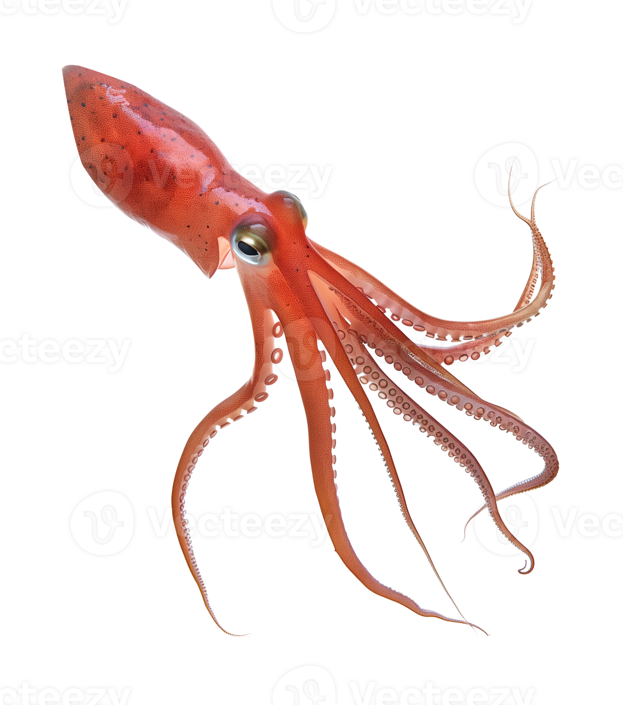

Back to the Aquarium!
tuna
salmon
squid
Squid
A cephalopod /ˈsɛfələpɒd/ is any member of the molluscan class Cephalopoda
/sɛfəˈlɒpədə/ (Greek plural κεφαλόποδες, kephalópodes; "head-feet")[4] such
as a squid, octopus, cuttlefish, or nautilus. These exclusively marine animals
are characterized by bilateral body symmetry, a prominent head, and a set of
arms or tentacles (muscular hydrostats) modified from the primitive molluscan
foot. Fishers sometimes call cephalopods "inkfish", referring to their common
ability to squirt ink. The study of cephalopods is a branch of malacology known
as teuthology.
